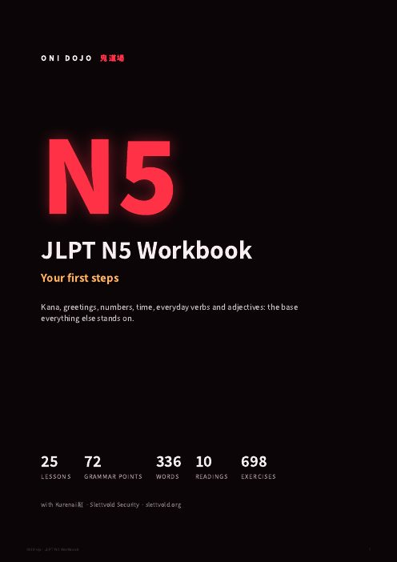

JLPT workbooks N5 to N1
Printable PDF workbooks from the Oni Dojo course, one for each JLPT level. Grammar with furigana, word lists with pictures, dialogues, graded readings and hundreds of exercises, with the answers at the back. Written by Kurenai, your oni sensei, who expects you to finish them.

レベルChoose your level
Prices in Norwegian kroner, tax included. Outside Norway you pay the same price in your own currency, shown before you pay. All five workbooks together: 499 kr instead of 745 kr.
中身In every workbook
- Grammar explained simply, with example sentences and furigana over every kanji
- Word lists with pictures and a box to tick when you know the word
- A dialogue and a culture note in every lesson, with Kurenai and her friends
- Four exercises per lesson, with room to write and the full answer key at the back
- Graded readings placed where you have learned enough to read them, with questions and translations
- A complete word list in kana order, showing where each word is taught
質問Questions
What is in each workbook?
Every lesson of that level from the Oni Dojo course: grammar explanations with furigana examples, the word list with pictures, the dialogue, a culture note and four exercises (matching, choosing the right word, translating and understanding the dialogue). Graded readings with questions sit between the lessons, and the answer key and a full word list are at the back.
Do I need the app?
No. The workbooks stand on their own. They follow the same lessons as the Oni Dojo app, so if you use both, the app gives you audio, flashcards and typed answers for everything in the book.
Can I print it?
Yes. The PDFs are A4 with room to write your answers. Print the whole book or just the lesson you are working on, as often as you like.
Is it the official JLPT material?
No. JLPT is run by the Japan Foundation and JEES, and these workbooks are independent. They cover the grammar and vocabulary commonly taught for each level, and every explanation, sentence and story is written for Oni Dojo.
How do I get the file?
You pay by card through Stripe, and the download link is shown straight after payment and sent to your email.
Can I share it?
The licence is personal: one learner, as many copies as you need for yourself. The free samples you are welcome to share with anyone. Teachers who want to use a workbook with a class can write to tommy@slettvold.org.
Can I get my money back?
Download the free sample first to see if the book suits you. If a file is broken or does not open, write to tommy@slettvold.org and I will fix it or refund you.
JLPT is a registered test of the Japan Foundation and Japan Educational Exchanges and Services; these workbooks are not affiliated with or endorsed by them. Payments are handled by Stripe, see the privacy policy.